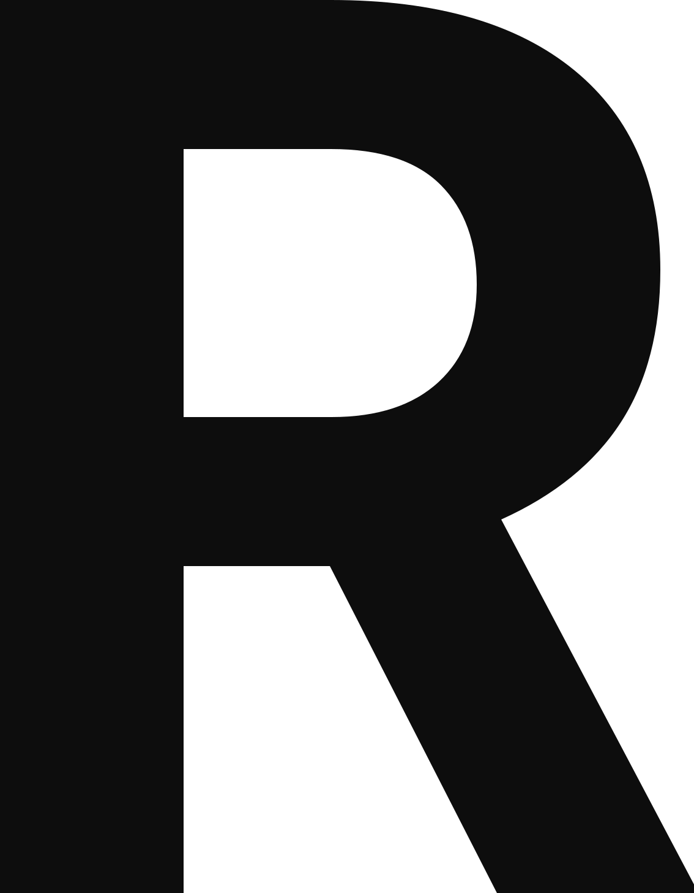
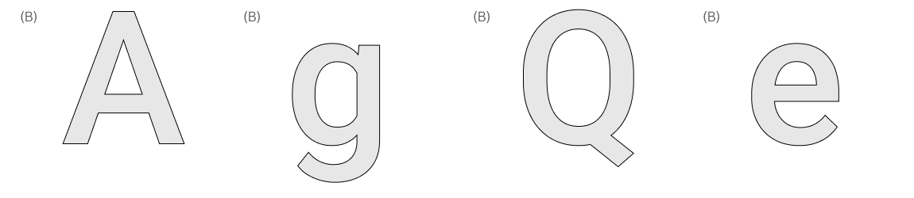
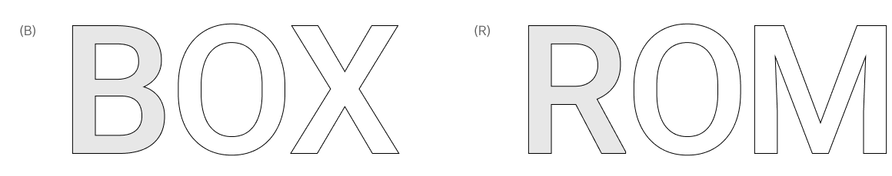
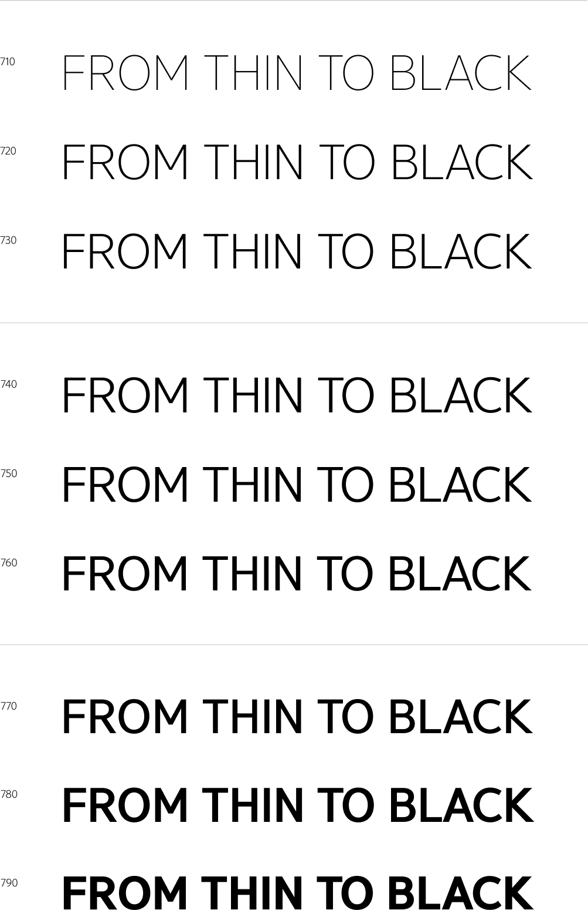
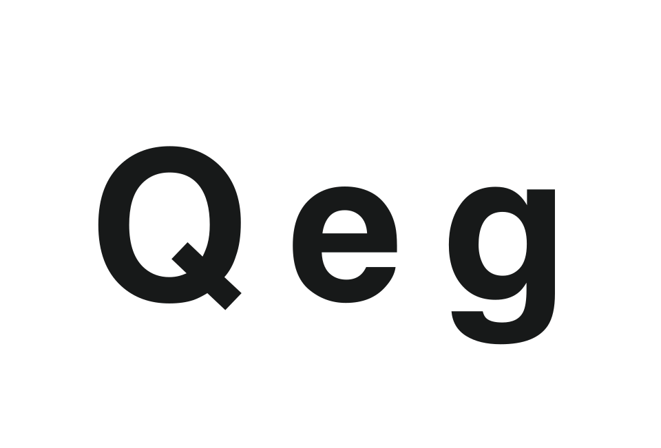
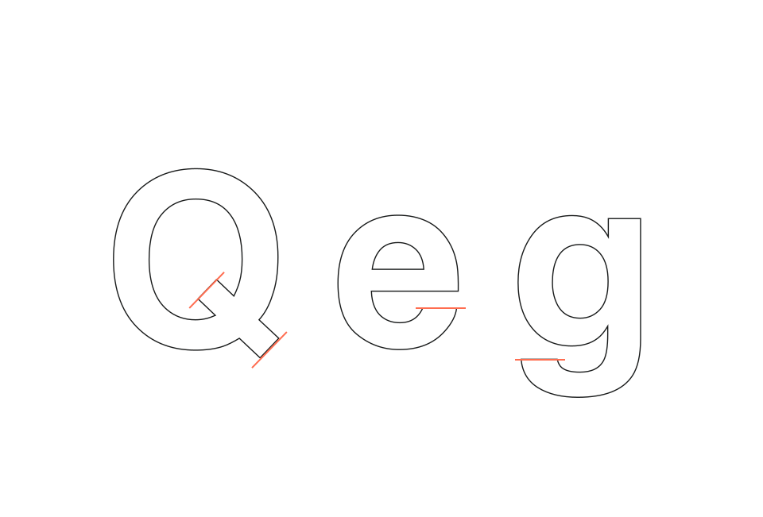
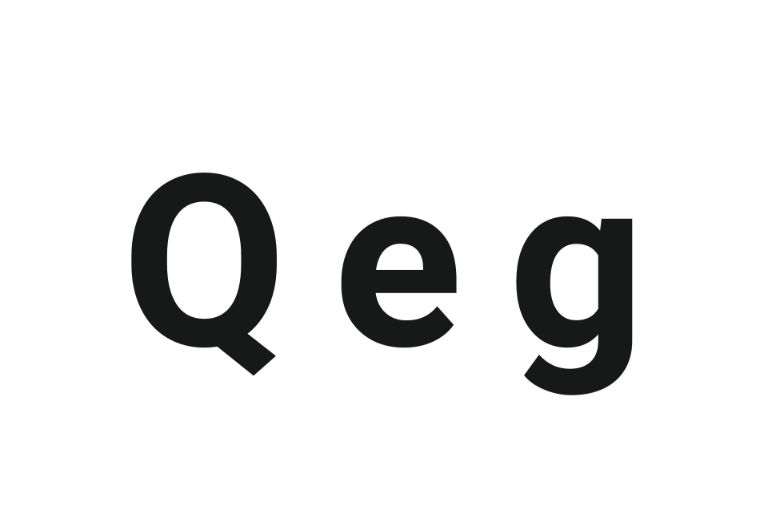
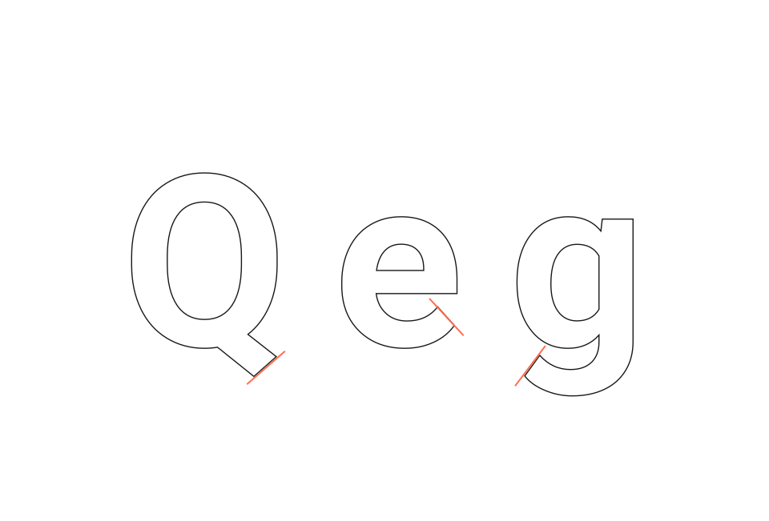
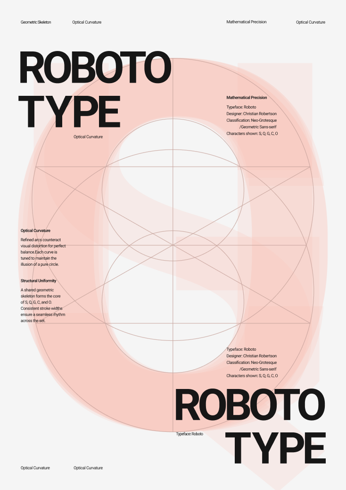

Typeface Archive
Typeface
ROBOTO
This concept highlights Roboto’s unique geometry—where rigid mechanical shapes meet open, friendly curves. It focuses on Roboto’s origin as the typeface for Android—the most-seen.

Background
제작 스토리
기억해? 모든 화면이 하나의 언어로 연결되기 시작한 그해 여름을.
모바일이라는 낯선 규격과 다양한 해상도 속에서 길을 잃지 않도록, 구글의 새로운 이정표가 된 Roboto는 수많은 안드로이드 기기 위에서 비로소 완성된 ‘디지털 네이티브’의 정석입니다. 기존 시스템 폰트의 딱딱한 기하학적 골격을 유지하면서도, 획의 끝부분을 부드럽게 굴리고 열린 구조를 채택하여 스크린 위에서도 사용자의 시선이 흐르도록 최적화된 가독성을 구현했습니다.
Character Anatomy
자형 특징
획의 분리
철저하게 계산된 직선적 골격은 디지털 환경에서 흔들림 없는 기계적 안정감을 제공하며 시스템의 견고한 신뢰를 시각화합니다. 동시에 ‘b, d, p’의 어깨 곡선에는 자연스러운 필기의 리듬을 섬세하게 반영하여, 딱딱한 스크린 위에서도 사용자의 시선이 피로감 없이 매끄럽게 흐르도록 다정한 인상을 완성합니다.

가변 폭 설계
‘B’의 닫힌 구조를 깨고 나온 ‘R’의 다리(Leg)는 서체에 생동감을 부여하며, 기계적인 수치 속에 숨겨진 인본주의적 리듬을 드러내는 본질적인 요소입니다. 직선으로 뻗어 내려오는 단호한 획의 마무리는 자칫 딱딱해질 수 있는 그로테스크 서체의 한계를 넘어, 문장 전체에 유연한 가독성의 흐름을 불어넣습니다.

Font Family
서체가족
변함없는 마음에도 9가지 표정이 필요하니까.

유연한 폭의 확장
동일 포인트에서 Roboto는 다양한 화면 환경에 맞춰 시각적으로 가장 안정적인 폭을 가집니다.
규격의 통일
다양한 두께군에서 Roboto는 서체 고유의 기하학적 뼈대를 유지하며 일관된 인상을 제공합니다.
비교꼴 분석 (1)
Helvetica
헬베티카는 직선으로 뻗은 꼬리를 가진 대문자 Q와 입구의 폭이 좁고 폐쇄적인 소문자 e를 통해 기하학적인 완결성을 추구합니다. 자소 g는 상하 루프가 꽉 짜인 2층 구조를 유지하며 직선으로 뻗은 귀를 통해 인쇄 기반의 전통적인 산세리프 미학을 여실히 보여줍니다.


HOVER · 자형 분석

HOVER · 자형 분석비교꼴 분석 (2)
Roboto
로보토는 부드러운 곡선형 꼬리의 Q와 개방적인 구조를 취한 e를 통해 저해상도 디지털 화면에서도 가독성을 확보합니다. 소문자 g는 같은 2층 구조임에도 하단 루프를 타원형에 가깝게 설계하여 기계적인 골격 속에 인문학적인 유연함을 적절히 배분했습니다.
Spacing & White Space
타이포그래피 메시지 표현
자간, 행간 연출을 통한 포스터 제작
원형과 직선이 만나는 지점의 좌표를 시각화하여, 이 서체가 단순히 그려진 것이 아니라 ‘구축된 것’임을 강조합니다. 중앙의 붉은색 원형 그래픽은 완벽한 원처럼 보이지만, 사실 인간의 눈이 느끼는 착시를 보정하기 위해 미세하게 조정된 곡선을 가지고 있습니다. 포스터 속 ‘Refined arcs counteract visual distortion’이라는 문구는 바로 이 지점을 설명합니다.
